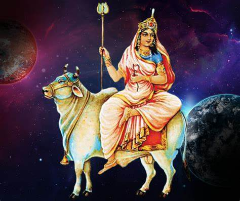
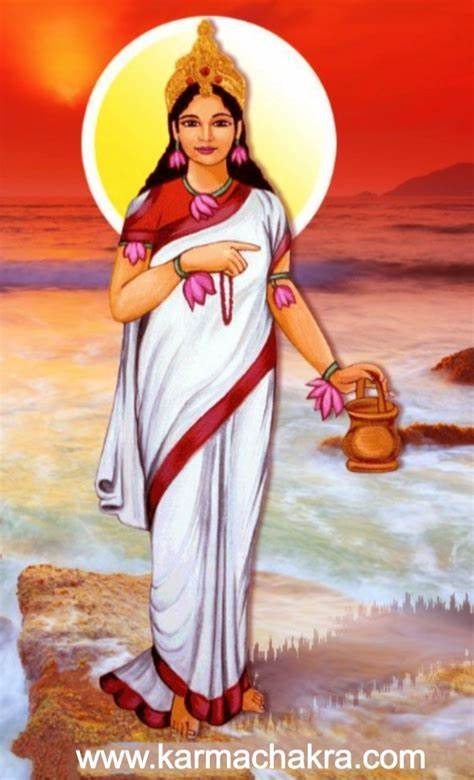
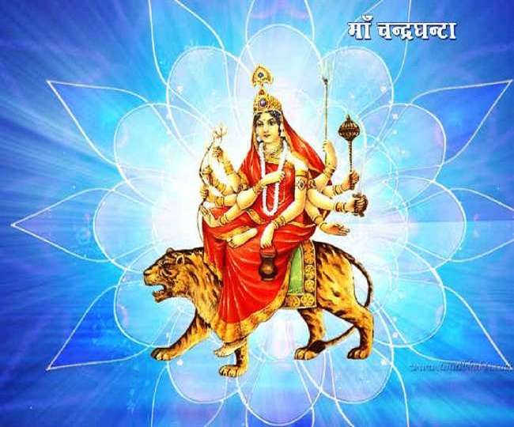
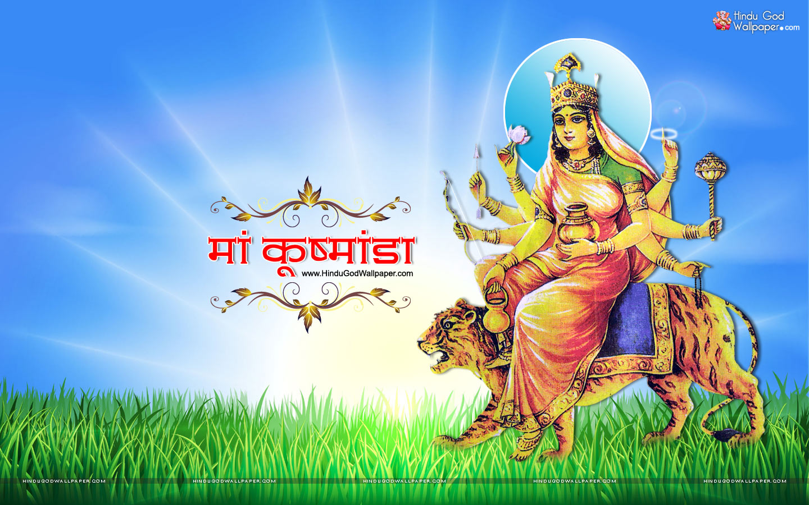
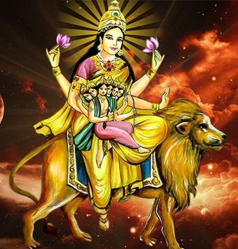

Shailputri is the daughter of the moutain king
himavat and is a manifestation and from of the hindu
mother goddes mahadevi,representing herself as the
pure form of goddess paravati, she is the first
navdurga
venerated during the first day of navratri,and is a
reincarnation of goddes sati.

branmacharini means a devoted female student who lives in an
ashram with her guru along with their students. she is the second
aspect of the navdurga froms of mhadevi. the goddes is worshipped on
the second day of navratri wears white clothes.

in hindustan chandraghanta is the third navdurga aspect of goddes
mahadevi her name means one who has half moon shaped like a bell
her third eye is always opened and she is always ready for war
against demons.she is also known as chandraghanta,chandika or ramchandi.
her worship takes place on the third day of navratri.

kushmanda is the hindu goddess,credited with creating the world
with her divine smile.Mata Kushmanda is the fourth divine form of
Mata Durga. She is said to be the creator of the universe by dispelling
the darkness that once gripped it for eons. Mata Kushmanda is believed to be
benevolent for her devotees and blesses them with peace, grace, bravery, and
prosperity in their lives.

Goddess Skandamata Overview The 5th day of Navratri is celebrated
in the name of Devi Skandamata, the 5th incarnation of Goddess Durga.
In Sanskrit, the word ‘Skanda’ means fair. The word ‘Skanda’ is also
associated with the god Kartikeya, and Mata means a mother.
